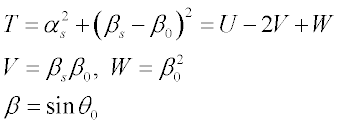

Indirectly or directly interpolates from entered BSDF values.
Syntax 1 - Indirect (isotropic) interpolation
BSDFDATA [ n ] [ d ][options…] [ PLOT [ a a' ... ] ]
RAWDATA
data…
:
Syntax 2 - Direct (anisotropic) interpolation
BSDFDATA X [ d ] [ options ... ]
RAWDATA Y
Z
:
data ...
:
| Option | Description |
|---|
| n | collapsed 4D direction space |
| d | small directional distance (default 0.001 radians) |
| PLOT | plots the model in log(b-bo) and angle space |
| a a' ... | user-defined degree specular angles |
| X,Y,Z | see the command argument, MODEL |
| options... | The command argument, ANGLES specifies data input in
polar and azimuthal angles COS provides a cosine correction to a data set
|
| data... | see Remarks for this option |
Remarks
- In general, a BSDF is a 4D
(four-dimensional) function, and is the function of incident angles,
and the scattering angles
For isotropic models, it is assumed that
Note variables T, U, V, and W are used in ASAP BSDFDATA
models.
- Indirect (isotropic) interpolation:
- The four-dimensional direction
space is collapsed to just n (default 2) dimensions that
enforce isotropic-surface symmetry and reciprocity (see the BINOMIAL model).
Note: ASAP does not automatically enforce
isotropic symmetry and reciprocity. You must assure such properties for
the supplied BSDF data.
- The d is a
small directional distance (default 0.001 radians) in each collapsed
dimension that is used to determine if two input data points have collapsed
to the same nD point. The BSDF or log(BSDF) (RAWDATA or BSDFDATA, respectively) is then
interpolated as a function of these n directional
coordinates:
| n | Coordinates | Interpolation |
|---|
| 1 | sqrt(T) | linear |
| 2 | sqrt(T), V | bilinear triangular |
| 3 | U,V,W | nearest point or reciprocal point |
For isotropic models,

The φs and θs correspond to the scatter angles
around (azimuthal) and from (polar) the normal, and θ0 is the
specular angle from the normal.
- ASAP uses the data point check
procedure shown below. For instance, to collapse into a 2D data set, if both
where subscript c and i mean
current data point and data points stored in the BSDF database, ASAP
assumes that the current data entry is the same as the ith point in the
data points.
- If ASAP determines that the
user-supplied data set has multiple entry BSDF values for the same point in
the collapsed space, ASAP uses the averaged BSDF value among these multiple
entries as the BSDF value for that point.
- The use of a negative value for
d (d<0) disables the same data point check so that
all user input data is stored in the database.
- Direct (anisotropic) interpolation:
- Creates a model that directly
interpolates from the entered BSDF data. The option d is
a small directional distance (default .001 radians for BSDFDATA, .000001 for RAWDATA) used to determine if two input
data points are reciprocal. The BSDF or log(BSDF) (RAWDATA or BSDFDATA, respectively) is then
interpolated as a function of the four directional coordinates.
- Since no assumptions concerning
symmetry are made, data must be provided over most of the output hemisphere
for most of the input hemisphere.
- Scattering from anisotropic
surfaces (for example, brushed, diamond-turned) is not rotationally
symmetric at normal incidence, and not necessarily symmetric about the plane
of incidence otherwise. Therefore, the orientation of the model on the
surface is important and is generally specified by an axis for the second
command entry. For syntax information, see the command argument, MODEL.
- If the entered data is not from an
isotropic surface or if it violates reciprocity, the interpolation may not
sufficiently match the original data (that is, it may be noisy).
- Small data sets (<95 points) are
placed in main memory storage.
- This model uses an internal
10000-point buffer. If the final number of data points the model needs to
store exceeds this, a disk file is used and runtimes can increase
dramatically. In this case, use a larger value of d to
further collapse the input data to fewer than 10000 final data points.
- Both Indirect and Direct interpolations:
BSDFDATA Examples